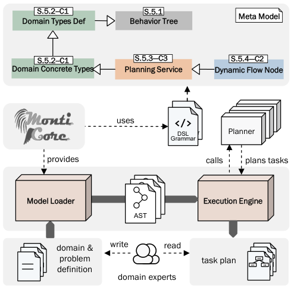
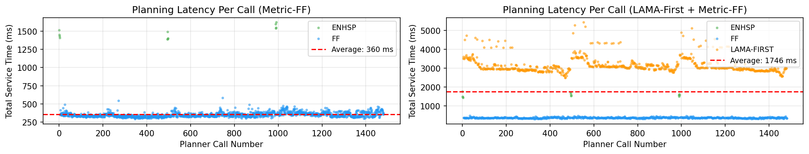
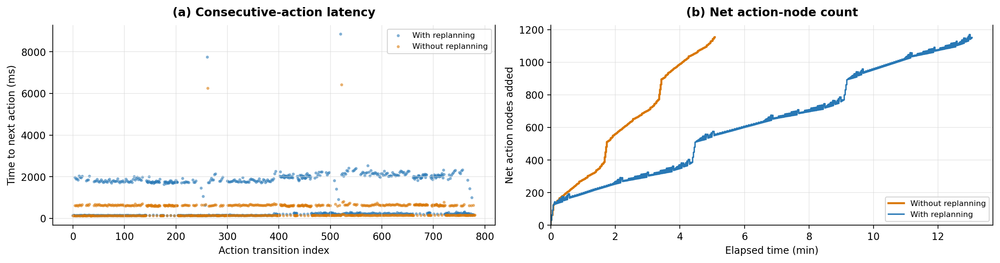

Provides a Lean 4 machine-checked proof that composed behavior-tree execution and local replanning are safe under stated assumptions such as planner soundness.
Abstract
Task planning for robots in off-site construction prefabrication is primarily manual, leading to planning inefficiencies and reluctance to adopt robotic solutions. Existing approaches provide limited support for scalable, modular automated task planning and localized runtime replanning. This paper proposes APTree, a model-driven framework that integrates automated task planning with modular task execution using behavior trees as the execution model. APTree repeatedly applies and coordinates heterogeneous symbolic planners to automatically generate and compose modular task plans at runtime. To support this approach, we develop a domain-specific language for the formal specification and validation of task plans, together with a compatible execution engine. We evaluate APTree on the real-world livMatS Biomimetic Shell pavilion, where it models the construction robotic fabrication domain, detects injected specification and planning errors at design time and runtime, and automatically generates large-scale task plans by coordinating three symbolic planners across numerous planning modules. A machine-checked formal analysis further shows that composed execution and local replanning are safe under explicitly stated assumptions, including planner soundness and non-interference of generated plans, providing practitioners with explicit conditions for dependable plan composition. APTree thus enables construction practitioners to leverage automated task planning without requiring detailed knowledge of symbolic planning techniques or APTree's internal implementation.
Problem
Robotic task planning for off-site construction prefabrication is mostly manual. Existing approaches give limited support for modular automated planning, explicit data dependencies, and localized runtime replanning.
Approach
APTree is a model-driven framework that extends behavior trees with a MontiCore-based DSL for specifying and validating task plans, plus a matching execution engine. It coordinates heterogeneous symbolic planners (ENHSP, LAMA-First, Metric-FF) to generate and compose modular plans at runtime. A Lean 4 formalization proves that composed execution and local replanning are safe under explicit assumptions, including planner soundness and non-interference of generated plans.

Figure 1: Overview of the APTree method discussed in the paper. The APTree method extends the existing BT metamodel with four packages, each marked by its corresponding section (S) number in the paper and the challenge it addresses (C).
Results
On the livMatS Biomimetic Shell pavilion case study, APTree detected all injected structural and typing errors at design time; the PlanSys2 baseline had 0% detection for typing and logical errors. It generated large-scale plans with 1,098 replanning events and per-call planner latency that stayed stable across invocations.

Figure 15: Per-call planning service latency for Metric-FF only (left) and LAMA-First + Metric-FF (right) as ML planners, ENHSP as HL planner, with replanning. Per-call latency remains stable across all invocations, with no degradation from repeated calls.

Figure 17: Execution sensitivity under the two branch-selection policies. (a) Time between consecutive ML actions, with (blue) and without (orange) replanning. (b) Cumulative net action nodes over execution time; upward steps are generated nodes, downward steps are nodes removed during plan replacement (replanning only).